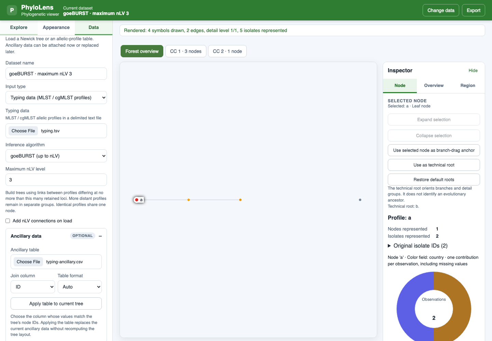

Input formats
You can load a Newick tree or build a tree from typing data. Supply sample information, called ancillary data, in a separate CSV or TSV table.
Newick trees#
Newick represents branches using parentheses and optional branch lengths:
('isolate 1':1,('isolate 2':2,'isolate 3':4)'internal clade':3)root;Leaf and internal labels are accepted. Unnamed junctions receive generated structural identifiers; these do not identify observed isolates and cannot be used as external ancillary join targets. Use explicit labels for nodes that need observations.
Several semicolon-terminated trees in one file are treated as a forest. Components stay separate. Non-negative finite branch lengths are preserved. Negative lengths are clamped to zero with a warning; omitted lengths remain unknown.
Typing data#
Provide a tab-separated table with a header, one identifier column and one or more locus columns. Every identifier must be non-empty and unique, and every row must have the same number of fields.
ST adk fumC gdh
ST1 1 2 4
ST2 1 3 4
ST3 8 9 10
Alleles are categorical identifiers. The distance is the number of
differing retained loci (Hamming distance). Allele
0 means missing data. If any profile has
0 at a locus, that locus is excluded from every profile.
Warnings list excluded loci. Blank cells are rejected.
Choose the goeBURST method
| Method | Result |
|---|---|
| goeBURST Full MST (all levels) | Uses all locus-variant levels to connect the profiles in one spanning tree. This is the default. |
| goeBURST (up to nLV) | Includes links up to the chosen maximum level. The initial value is 3. Profiles can remain in separate components. |
For example, maximum nLV 3 permits links with one, two or three differing loci. It does not require all those links to appear: goeBURST selects the tree edges. The maximum level must be a positive integer.

Equivalent profiles
Profiles that are identical after complete-locus filtering share one biological node. Every original isolate identifier and its ancillary observations are retained. The isolate count is distinct from the number of nodes represented by a detail group.
These typing-derived relationships do not, by themselves, establish an evolutionary phylogeny.
Ancillary data#
Use a CSV or TSV table with a header. Choose the column containing the node or isolate identifiers:
ID,country,year
ST1,Portugal,2024
ST2,Spain,2024
ST3,Portugal,2025For Newick, observations join to explicitly labelled nodes. For typing input, observations join to the original isolate identifiers, including isolates sharing a profile. Supply at most one ancillary row per original typing isolate.
Nodes without a matching ancillary row remain in the tree. Unmatched identifiers produce warnings. For programmatic metadata options, see the browser API and HTTP preparation API.
Replace a table after loading
To change sample information without rebuilding the tree, choose an Ancillary table, select its Join column and Table format, then click Apply table to current tree. This replaces the current fields and values, including values supplied with the original load. Missing fields and unmatched records do not keep old values.
The update keeps the camera, geometry and manual arrangements. Original typing-isolate identities remain available, even for isolates without a matching new row. Unmatched identifiers produce warnings; a table that matches no nodes fails. If an update fails, the previous view remains usable.
Advanced input settings
Initial distance connections
For typing data, Add nLV connections on load applies an additional connection overlay after preparation. Choose its Initial nLV level and optional connection limit. This is separate from the inference algorithm’s maximum nLV: the overlay does not change the prepared components. A rejected overlay does not turn a successfully prepared tree into a failed load.
Small-component protection
Under Advanced preparation, Small component limit (nodes) keeps components of this size or smaller explicit at every detail tier. The default is 64; set 0 to disable protection. Apply this setting with Load dataset, because it changes preparation. Larger components can still use detail groups.
Advanced ancillary JSON
Use this field to declare sample types, supply values directly or set
an initial visual mapping. It is applied when loading a dataset. For
example, with Newick node A:
{
"ancillary_schema": [{ "key": "country", "type": "string" }],
"ancillary_by_node_id": { "a": { "country": "Portugal" } },
"visual_mapping": { "colorField": "country" }
}
Include ancillary_schema,
ancillary_by_node_id, or both. Direct values take
precedence over a table’s values for the same field.
visual_mapping is optional. These are the input-box
names; the
browser API uses camelCase
option names.
The Apply table to current tree action uses the selected table, not this JSON field. See the browser API for changing mappings or applying tables from a host application.